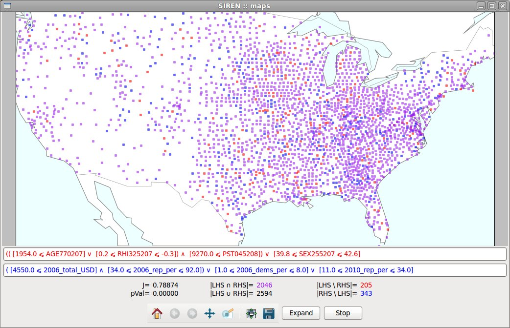

Use-cases
Biological niche-finding
Data
The Bio data describes spatial areas of Europe, 2575 squares of side
roughly 50 kilometers. The left hand side data contains information
about the mammals that live in these areas denoted with the names of the
respective species. The minimum, maximum and average monthly
temperatures in degrees Celsius as well as average monthly precipitation
in millimeters, make up the right hand side data, denoted as t+X, t-X, t=X and p=X, respectively, where X is the number of the month.
The data comes from two publicly available datasets: European Mammals atlas and Worldclim climate data.
Exploration
- Double click a variable to show it in a Map window.
- If you whish not to use some of the variables in this expansion,
disable them by unchecking the corresponding box in the variables list
of the Tools window.
- For example, let's use only monthly average temperature and rainfall, disabling monthly minimum and maximum temperatures.
- Start the expansion by clicking the expand button in the Map window.
The best extensions mined are appended to the expansion list in the tool
panel.
- Expansion is done. Let's have a closer look at some result.
-
The results can be opened in different Map windows to be compared, by
choosing "View in new window" in the contextual menu. For example with
an extension from "Southwestern water vole".

-
The list of results can be sorted and filtered. Given a redescription of
interest, click filter redundant in the contextual menu to disable all
redundant redescriptions, i.e. redescription having too much overlap
with it.
-
A list of edited redescriptions is maintained. It allows to keep an
history of modifications and to undo changes, making edition safe.
US census and election funds
Data
The US data describes the counties of continental United-States. The
left hand side data contains socio-economic statistical indicators about
these areas, see details here.
The right hand side consists of data about funding of the electoral
campaigns in 2006, 2008 and 2010, the total funds, percentage allotted
to republican and to democratic party, respectively.
The data has been gathered from two public websites: FedStats and Open Secrets.
Exploration
- Double click a redescription to open it in a Map window.

- Edit the redescription.
- If you wish not to use some of the variables in this expansion, for
example variables used in the previous redescription, disable them by
unchecking the corresponding box in the variables list in the tool
panel.
- Start the expansion by clicking the expand button in the Map window.
The best extensions mined are appended to the expansion list in the tool
panel.
- Expansion is done. The list of results can be sorted and filtered.
Given a redescription of interest, click filter redundant in the
contextual menu to disable all redundant redescriptions, i.e.
redescription having too much overlap with it.
Siren --- Last modified: Wed Aug 1 2012, galbrun@cs.helsinki.fi